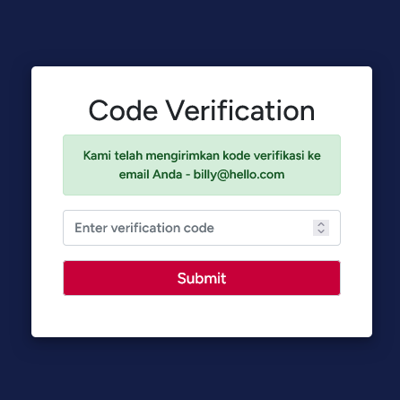
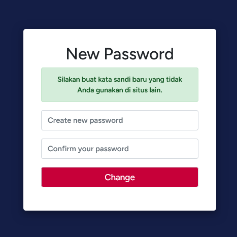
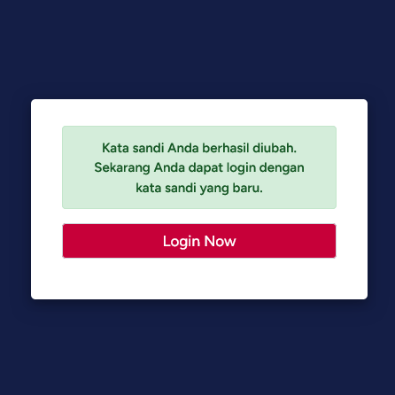
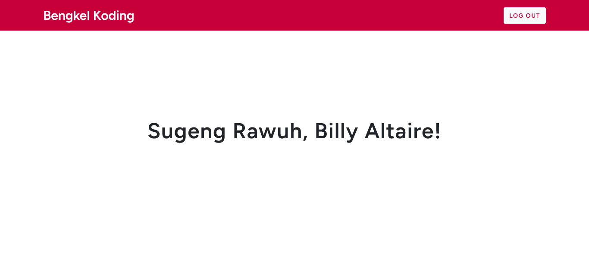

[Part II] - Login Form
Memverifikasi Akun Baru
Pada bagian ini, konsep yang digunakan mirip dengan bagian sebelumnya. Namun, halaman ini dibuat khusus untuk memverifikasi akun yang baru saja dibuat. Hal ini ditujukan supaya akun baru tersebut statusnya berubah dari not verified menjadi verified. Untuk tampilan daripada halaman user-otp.php ini tidak jauh berbeda dengan yang sebelumnya. Berikut ini tampilan dari halaman tersebut:

Jangan lupa untuk beri identitas pada tiap bagiannya. Untuk input-an kode OTP berikan name="otp" dan button “Submit” dengan name="check". Tidak perlu khawatir, Anda dapat menyalin semua kode Anda yang terdapat di halaman reset-code.php ke halaman user-otp.php, ini termasuk semua komponen yang ada di dalamnya! Hanya identitas saja yang perlu diubah.
Membentuk Password Baru
Saat ini, pengaturan dari SMTP kita telah siap untuk dieksekusi. Kita akan meneruskan perjalanan dengan pembuatan kata sandi atau password baru. Di dalamnya terdapat 2 (dua) input-an, yaitu password baru dan konfirmasi ulang password baru. Selain itu, juga ada button “Change” untuk memvalidasi aksi pengubahan password kita tadi. Berikan file ini dengan nama new-password.php dan berikut merupakan tampilan halamannya:

Berikan identitas pada masing-masing bagian. Untuk input-an password baru beri atribut name="password" dan input-an konfirmasi ulang password baru, yaitu name="cpassword". Sedangkan untuk button “Change”, berikan name="change-password". Pastikan pula di halaman ini memiliki kode PHP yang berupa email sessions, notifikasi perintah, dan penanganan error yang sama seperti pada halaman reset-code.php.
Melompat untuk Login Sekarang
Setelah kita mengubah password lama kita menjadi yang baru, kita diwajibkan untuk login ke dalam akun kita untuk memastikan bahwasannya kata sandi kita betul-betul telah berhasil diubah. Oleh karena itu, selanjutnya kita akan membuat suatu halaman yang dapat dibilang hanya berupa notifikasi bahwa password kita berhasil diubah dan button “Login Now” saja. Berikan nama file halaman ini dengan judul password-changed.php. Berikut tampilan daripada halaman tersebut:

Halaman ini dapat dikatakan mudah dalam menyusun komponen-komponen yang ada di dalamnya. Anda dapat berkreasi sendiri sesuai dengan inovasi Anda atau dapat juga salin kode berikut ini untuk membuat halaman password-changed.php:
<?php
if ($_SESSION['info'] == false) {
header('Location: login-user.php');
}
?>
<!DOCTYPE html>
<html lang="en">
<head>
<meta charset="UTF-8">
<title>Login Form</title>
<link rel="stylesheet" href="https://stackpath.bootstrapcdn.com/bootstrap/4.5.2/css/bootstrap.min.css">
<link rel="stylesheet" href="style.css">
</head>
<body>
<div class="container">
<div class="row">
<div class="col-md-4 offset-md-4 form login-form">
<?php
if (isset($_SESSION['info'])) {
?>
<div class="alert alert-success text-center" style="font-weight: 600; font-size: 15px;">
<?php echo $_SESSION['info']; ?>
</div>
<?php
}
?>
<form action="login-user.php" method="POST">
<div class="form-group">
<input class="form-control button" type="submit" name="login-now" value="Login Now">
</div>
</form>
</div>
</div>
</div>
</body>
</html>Selamat Datang di Beranda Website
Setelah melewati berbagai lika-liku pembuatan sistem login serta registrasi akun, sampailah kita pada halaman beranda atau homepage atau landing page atau dashboard atau sebutan yang lainnya. Dikarenakan judul studi kasus ini hanyalah berupa modul login form, pada halaman ini, Anda bebas mengutarakan kreativitas serta inovasi Anda dalam mengkombinasikan dengan ide proyek milik Anda sendiri.
Sebagai sarana pendukung modul pembelajaran, pada halaman ini intinya adalah bagaimana kita mengakhiri sessions atau log out dari sistem. Namun sebelum itu, Anda tidak bisa serta merta baru saja masuk langsung keluar. Anda harus melewati halaman beranda atau home dulu setidaknya untuk keluar. Lazimnya, terdapat button “Keluar” atau “Log Out” yang acapkali kita jumpai di suatu halaman website.
Kendati demikian, kita akan memberikan contoh halaman dari home.php yang di mana terdapat button untuk log out dari situs tersebut. Berikut cuplikan sederhana dari halaman tersebut:

Pada halaman di atas, button “Log Out” tersebut hanya merujuk untuk keluar dari sistem. Jadi, apabila button di-klik akan mengembalikkan kita ke halaman login form di awal. Namun, perlu diketahui di halaman home.php ada beberapa kode PHP yang perlu ditambahkan di atas konten HTML, yaitu berikut ini:
<?php
// SESSIONS FOR EACH ACCOUNTS
$email = $_SESSION['email'];
$password = $_SESSION['password'];
// JIKA EMAIL DAN PASSWORD SALAH
// JIKA BELUM ADA SESSION DARI EMAIL DAN PASSWORD
if ($email != false && $password != false) {
$sql = "SELECT * FROM usertable WHERE email = '$email'";
$run_Sql = mysqli_query($con, $sql);
if ($run_Sql) {
$fetch_info = mysqli_fetch_assoc($run_Sql);
$status = $fetch_info['status'];
$code = $fetch_info['code'];
if ($status == "verified") {
if ($code != 0) {
header('Location: reset-code.php');
}
} else {
header('Location: user-otp.php');
}
}
} else {
header('Location: login-user.php');
}
?>Seperti yang lainnya, letakkan kode tersebut paling atas dari halaman PHP. Amati tiap conditional sentences yang ada pada source code di atas dan tariklah kesimpulan! Jikalau Anda mendapati kejanggalan “Dari mana variabel atau bahkan isian variabel ini berasal?”. Tenang, tak perlu cemas karena kita akan membangun controller dari keseluruhan sistem yang tengah kita bangun ini.
Kontroler Sistem
Pendahuluan
Di dunia web development, controller adalah sebuah bagian dari sebuah framework atau kerangka kerja aplikasi web yang bertugas mengatur dan mengelola permintaan (request) serta respon (response) antara interaksi pengguna dan aplikasi web.
Sebuah controller biasanya bertanggung jawab untuk menerima permintaan dari pengguna melalui URL, mengolah permintaan tersebut, memproses data yang dibutuhkan dari model, dan me-render (menampilkan) tampilan (view) yang sesuai kepada pengguna sebagai respon. Contoh framework yang menggunakan konsep controller adalah Laravel, Express.js, Django, dan masih banyak lagi.
Dalam pengembangan aplikasi web, penggunaan controller sangat membantu dalam membagi tugas-tugas yang berbeda, seperti tampilan, logika bisnis, dan pengolahan data. Hal ini memudahkan pengembang untuk memelihara dan memperbarui aplikasi web secara efisien dan terstruktur. Bagaimana, apakah Anda sudah paham akan konsep dari controller? Jika sudah, let’s dig deeper into the world of controllers!
C0 – Langkah Awal
Firstly, buatlah file PHP baru dan beri nama controllerUserData.php. Kemudian, buat kode PHP di dalamnya dengan tag <?php ?>. Di dalam file ini, sepenuhnya kita akan membuat fungsi-fungsi procedural yang di mana akan berperan dalam merespon segala tindakan pengguna ke dalam sistem aplikasi. Di bagian awal atau atas file ini, salin kode berikut pada file controllerUserData.php Anda:
<?php
session_start();
require "connection.php";
$email = "";
$name = "";
$errors = array();
// [ANOTHER OPTION] REGULAR EXPRESSION FOR EMAIL VALIDATION
// PREREQUISITE MATA KULIAH OTOMATA & TEORI BAHASA
$pattern = '/^[a-zA-Z0-9._-]+@[a-zA-Z0-9.-]+\.[a-zA-Z]{2,4}$/';Secara singkat, fungsi session_start() dalam bahasa PHP digunakan untuk memulai atau mengaktifkan sesi pada script PHP. Session adalah suatu cara untuk menyimpan data pengguna antara beberapa permintaan halaman web. Ini memungkinkan kita untuk menyimpan informasi seperti variabel, input-an data pengguna, atau data lainnya yang perlu dipertahankan selama pengguna berinteraksi dengan situs web Anda.
C1 – Bagian Pendaftaran Akun
Masih di dalam file controllerUserData.php, selanjutnya kita akan membuat controller pada saat di bagian pendaftaran akun. Berikut adalah source code dari controller program tersebut:
// DIGUNAKAN UNTUK PEMBUATAN AKUN PERTAMA KALI [SIGNUP-USER.PHP]
// PROSES PENGIRIMAN DATA [SIGNUP BUTTON]
if (isset($_POST['signup'])) {
$name = mysqli_real_escape_string($con, $_POST['name']);
$email = mysqli_real_escape_string($con, $_POST['email']);
$password = mysqli_real_escape_string($con, $_POST['password']);
$cpassword = mysqli_real_escape_string($con, $_POST['cpassword']);
// DIGUNAKAN UNTUK MEMVALIDASI APAKAH EMAIL VALID ATAU TIDAK
if (filter_var($email, FILTER_VALIDATE_EMAIL) === FALSE) {
$errors['email'] = "Harap masukkan alamat email yang benar!";
}
// DIGUNAKAN UNTUK MEMVERIFIKASI APAKAH ANTARA PASSWORD DAN KONFIRMASI PASSWORD SAMA
if ($password !== $cpassword) {
$errors['password'] = "Konfirmasi kata sandi Anda tidak cocok!";
}
// DIGUNAKAN UNTUK MENEGECEK APAKAH EMAIL SUDAH TERDAFTAR/BELUM SEBELUMNYA
// (*) => Merupakan simbol ASTERISK atau BINTANG KECIL
$email_check = "SELECT * FROM usertable WHERE email = '$email'";
$res = mysqli_query($con, $email_check);
if (mysqli_num_rows($res) > 0) {
$errors['email'] = "Alamat email Anda sudah terdaftar!";
}
// PROSES INPUT DATA BARU KE DATABASE
if (count($errors) === 0) {
// Meng-enkripsi atau mengcover password
$encpass = password_hash($password, PASSWORD_BCRYPT);
// Fungsi generate random integer atau serangkaian angka acak
$code = rand(999999, 111111); // Min = 999999; Max = 111111
$status = "notverified";
$insert_data = "INSERT INTO usertable (name, email, password, code, status)
values('$name', '$email', '$encpass', '$code', '$status')";
$data_check = mysqli_query($con, $insert_data);
// DIGUNAKAN UNTUK MEM-VERIFIKASI STATUS AKUN DENGAN KODE OTP
// DIBUTUHKAN FUNGSI MAIL DELIVIER (SMTP) UNTUK MENGIRIM EMAIL
if ($data_check) {
$subject = "Kode Verifikasi Email"; // Subjek email
$message = "Kode verifikasi Anda adalah $code"; // Isi pesan email
// ! ALAMAT EMAIL WAJIB SAMA DENGAN SETTING-AN SMTP !
$sender = "From: emailaktif@gmail.com"; // Pengirim email
// PENGIRIMAN KODE OTP VIA EMAIL
if (mail($email, $subject, $message, $sender)) {
$info = "Kami telah mengirimkan kode verifikasi ke email Anda - $email";
$_SESSION['info'] = $info;
$_SESSION['email'] = $email;
$_SESSION['password'] = $password;
header('location: user-otp.php');
exit();
// HANDLING ERROR KODE OTP
} else {
$errors['otp-error'] = "Terjadi kesalahan saat mengirim kode OTP!";
}
// HANDLING ERROR INSERT INTO DATABASE
} else {
$errors['db-error'] = "Gagal menambahkan data ke database!";
}
}
}Algoritma dari procedural tersebut dimulai apabila terdapat aksi dari user di saat melakukan registrasi akun dengan menekan button “Sign Up”. Jadi, setelah terdapat 4 buah inputan data yang masuk akan melalui serangkaian proses verifikasi serta validasi terlebih dahulu. Di antaranya ada validasi alamat email, konfimasi kecocokan password, mengecek apakah alamat email sudah terdaftar atau belum, enkripsi password, dan melakukan pengiriman kode OTP via email.
Anda dapat mengamati serta memodifikasi tiap-tiap kode di atas agar dapat mengetahui apa saja perbedaan respon yang diberikan jikalau Anda mengubahnya. Contohnya, Anda dapat mengubah kode validasi email dengan variabel $pattern yang ada di section C0 – Langkah Awal. Namun, setidaknya untuk menggunakan variabel tersebut, Anda perlu mengetahui rangkaian karakter, angka, serta simbol yang digunakan dalam memvalidasi alamat email. Hal ini bisa Anda dapatkan dari mata kuliah Otomata & Teori Bahasa di kampus.
C2 – Memverifikasi Akun Baru
Masih di dalam file yang sama, kita akan meneruskan perjalanan kita setelah membuat akun dengan memverifikasi akun yang baru saja dibuat oleh user. Perhatikan source code yang ada di bawah ini:
// PROSES VERIFIKASI KODE OTP [USER-OTP.PHP]
// DIGUNAKAN UNTUK MEMVERIFIKASI AKUN MELALUI KODE OTP YANG TELAH DIKIRIMKAN VIA EMAIL
if (isset($_POST['check'])) {
// DIGUNAKAN UNTUK MENAMPILKAN NOTIFIKASI SUKSES ATAUPUN ERROR
$_SESSION['info'] = "";
// DATA YANG DIKIRIM OLEH USER MELALUI INPUTAN BOX OTP [USER-OTP.PHP]
$otp_code = mysqli_real_escape_string($con, $_POST['otp']);
$check_code = "SELECT * FROM usertable WHERE code = $otp_code";
$code_res = mysqli_query($con, $check_code);
// ALGORITMA PEMROSESAN DARI 'NOTVERIFIED' KE 'VERIFIED'
if (mysqli_num_rows($code_res) > 0) {
// MENGAMBIL DATA DARI SQL
$fetch_data = mysqli_fetch_assoc($code_res);
// MEMUAT DATA KODE SQL
$fetch_code = $fetch_data['code'];
$email = $fetch_data['email'];
// INISIASI APABILA BERHASIL TERVERIFIKASI, KODE MENJADI 0 SELAIN ITU GAGAL
$code = 0;
$status = 'verified';
$update_otp = "UPDATE usertable SET code = $code, status = '$status' WHERE code = $fetch_code";
$update_res = mysqli_query($con, $update_otp);
if ($update_res) {
$_SESSION['name'] = $name;
$_SESSION['email'] = $email;
header('location: home.php');
exit();
} else {
$errors['otp-error'] = "Terjadi kesalahan saat memperbarui kode OTP!";
}
} else {
$errors['otp-error'] = "Kode OTP yang Anda masukkan salah!";
}
}Pemrosesan verifikasi akun melalui beberapa tahap, yaitu memperbarui kode OTP yang terdapat di phpMyAdmin serta mencocokan antara kode OTP input-an user (didapat dari email) dengan kode yang ada di database. Yang menjadi tolak ukur terverifikasinya suatu akun adalah apabila tiap alamat email yang memiliki kode 0, maka akun dengan alamat email tersebut sudah terverifikasi, selain itu belum. Sangat mudah, bukan?
C3 – Masuk ke Dalam Sistem
Selanjutnya setelah membuat controller verifikasi akun, kita akan membuat untuk yang lainnya, yaitu login. Halaman ini, memuat beberapa conditional cases, seperti apakah bentuknya? Mari kita simak melalui source code berikut ini:
// APABILA USER AKAN LOGIN [LOGIN BUTTON]
// MASUK KE DALAM SISTEM [LOGIN-USER.PHP]
if (isset($_POST['login'])) {
$email = mysqli_real_escape_string($con, $_POST['email']);
$password = mysqli_real_escape_string($con, $_POST['password']);
// DIGUNAKAN APABILA ALAMAT EMAIL BELUM TERDAFTAR
// MENGECEK EMAIL DARI DATABASE
$check_email = "SELECT * FROM usertable WHERE email = '$email'";
$res = mysqli_query($con, $check_email);
// #1 - APAKAH EMAIL SUDAH TERDAFTAR?
if (mysqli_num_rows($res) > 0) {
$fetch = mysqli_fetch_assoc($res);
$fetch_pass = $fetch['password'];
// #2 - APAKAH EMAIL DAN ATAU PASSWORD YANG DIINPUTKAN BENAR?
if (password_verify($password, $fetch_pass)) {
$_SESSION['email'] = $email;
$status = $fetch['status'];
// #3 - APAKAH AKUN SUDAH TERVERIFIKASI?
if ($status == 'verified') {
$_SESSION['email'] = $email;
$_SESSION['password'] = $password;
header('location: home.php');
} else {
$info = "Sepertinya kamu belum memverifikasi emailmu, nih - $email";
$_SESSION['info'] = $info;
header('location: user-otp.php');
}
} else {
$errors['email'] = "Alamat email atau password salah!";
}
} else {
$errors['email'] = "Sepertinya Anda belum terdaftar sebagai member! Daftar melalui link di bawah ini.";
}
}Di dalam script, Anda bisa mengobservasi bahwasannya terdapat beberapa kondisi; jika ini, maka demikian, ini dikarenakan untuk dapat menangani kasus-kasus di saat situasi-situasi tertentu. Misalnya, apa yang harus dilakukan apabila suatu saat ternyata user memasukkan alamat email yang ternyata belum terdaftar pada sistem. Contoh lainnya, apa yang harus dilakukan apabila password dan/atau email yang dimasukkan oleh user salah? Nah, demikianlah peran dari tiap-tiap nested if-else statement di atas. Amati dan tariklah kesimpulan!
C4 – Lupa Kata Sandi
Acapkali kita lupa akan kata sandi suatu akun terlebih kita memiliki puluhan akun dengan kombinasi password tiap akun berbeda. Oleh karena itu, kita harus membangun controller yang di mana dapat memungkinkan kita untuk mengubah password lama dengan yang baru. Salin kode berikut ini ke dalam file controller Anda (controllerUserData.php):
// APABILA USER LUPA PASSWORD [FORGOT PASSWORD LINK]
// NB: AKSI MELAKUKAN KLIK "CONTINUE" BUTTON [FORGOT-PASSWORD.PHP]
if (isset($_POST['check-email'])) {
$email = mysqli_real_escape_string($con, $_POST['email']);
$check_email = "SELECT * FROM usertable WHERE email='$email'";
$run_sql = mysqli_query($con, $check_email);
if (mysqli_num_rows($run_sql) > 0) {
// KODE OTP BARU
// SEBAGAI SYARAT UNTUK MENGUBAH PASSWORD
$code = rand(999999, 111111);
$insert_code = "UPDATE usertable SET code = $code WHERE email = '$email'";
$run_query = mysqli_query($con, $insert_code);
if ($run_query) {
$subject = "Kode Reset Password"; // Subjek email
$message = "Kode reset password Anda adalah $code"; // Isi email
$sender = "From: emailaktif@gmail.com"; // Pengirim email
if (mail($email, $subject, $message, $sender)) {
$info = "Kami telah mengirimkan OTP reset kata sandi ke email Anda - $email";
$_SESSION['info'] = $info;
$_SESSION['email'] = $email;
header('location: reset-code.php');
exit();
} else {
$errors['otp-error'] = "Terjadi kesalahan saat mengirim kode!";
}
} else {
$errors['db-error'] = "Whoops.. ada sesuatu yang salah!";
}
} else {
$errors['email'] = "Sepertinya email tersebut belum terdaftar, nih!";
}
}Di saat lupa password, user akan diminta untuk memasukkan alamat email akun mereka. Kemudian, sistem mulai bekerja dengan mengecek kembali apakah email sudah terdaftar dan sebagainya. Jika Anda mengamati dengan saksama, konsep yang dipakai sama seperti dengan fungsi-fungsi procedural sebelumnya. Di sini pula, kita akan membentuk suatu kode OTP baru guna verifikasi perubahan kata sandi dari yang lama menjadi baru. Ini memiliki kesinambungan dengan controller yang akan kita bahas selanjutnya.
C5 – Kode OTP untuk Password Baru
Pada verifikasi kode OTP yang digunakan untuk reset password ini dapat dikatakan sangat mudah. Kita hanya perlu memuat session dari email dari melakukan proses verifikasi terhadap kecocokan kode OTP yang telah dikirimkan melalui alamat email. Berikut source code dari controller tersebut:
// MEMVERIFIKASI KODE OTP KHUSUS UNTUK PASSWORD BARU
// AKSI YANG DILAKUKAN SAAT MEMINTA RESET PASSWORD [RESET-CODE.PHP]
if (isset($_POST['check-reset-otp'])) {
$_SESSION['info'] = "";
$otp_code = mysqli_real_escape_string($con, $_POST['otp']);
$check_code = "SELECT * FROM usertable WHERE code = $otp_code";
$code_res = mysqli_query($con, $check_code);
if (mysqli_num_rows($code_res) > 0) {
$fetch_data = mysqli_fetch_assoc($code_res);
$email = $fetch_data['email'];
$_SESSION['email'] = $email;
$info = "Silakan buat kata sandi baru yang tidak Anda gunakan di situs lain.";
$_SESSION['info'] = $info;
header('location: new-password.php');
exit();
} else {
$errors['otp-error'] = "Kode OTP yang Anda masukkan salah!";
}
}Dikarenakan dari awal kita sudah menyinggung controller yang satu ini khusus reset password, ini memiliki makna bahwa alamat email user sudah terdaftar pada sistem. Oleh karenanya, kemungkinan terjadi kondisi-kondisi tertentu sangatlah sedikit. Ini disebabkan ruang lingkup dari controller ini hanya membatasi untuk memverifikasi kode OTP yang diberikan. Penanganan masalah daripada halaman ini hanya berkisar di saat user salah memasukkan kode OTP.
C6 – Membuat Password Baru
Saat ini kita akan memasuki proses pembuatan password baru. Seperti yang kita ketahui, setelah kita mendapat izin dengan verifikasi kode OTP, kita diberikan kewenangan untuk mengubah kata sandi pada akun kita. Kita akan menggabungkan beberapa komponen-komponen seperti yang telah kita lakukan pada controller sebelumnya. Simak source code berikut:
// MENGGANTI PASSWORD YANG LAMA DENGAN YANG BARU
// AKSI DILAKUKAN DENGAN BUTTON "CHANGE PASSWORD" [NEW-PASSWORD.PHP]
if (isset($_POST['change-password'])) {
$_SESSION['info'] = "";
$password = mysqli_real_escape_string($con, $_POST['password']);
$cpassword = mysqli_real_escape_string($con, $_POST['cpassword']);
if ($password !== $cpassword) {
$errors['password'] = "Konfirmasi kata sandi Anda tidak cocok!";
} else {
$code = 0;
$email = $_SESSION['email'];
$encpass = password_hash($password, PASSWORD_BCRYPT);
$update_pass = "UPDATE usertable SET code = $code, password = '$encpass' WHERE email = '$email'";
$run_query = mysqli_query($con, $update_pass);
if ($run_query) {
$info = "Kata sandi Anda berhasil diubah. Sekarang Anda dapat login dengan kata sandi yang baru.";
$_SESSION['info'] = $info;
header('Location: password-changed.php');
} else {
$errors['db-error'] = "Gagal untuk mengubah kata sandi Anda!";
}
}
}Jadi, nantinya user akan memasukkan kata sandi mereka yang baru. Kemudian, akan dilakukan kecocokan antara password dan konfirmasi ulang password. Jika sesuai, akan dieksekusi perintah SQL untuk meng-update kode user menjadi 0 dan password yang tentunya sudah dienkripsi. Setelah itu, user akan diarahkan untuk masuk ke dalam sistem (login) dengan ditampilkannya halaman notifikasi bahwa kata sandi berhasil diubah.
C7 – Masuk Kembali dengan Password Baru
Dikarenakan halaman berikutnya setelah mengubah password hanya berupa halaman notifikasi, kita hanya perlu script singkat seperti berikut ini:
// CONTROLLER UNTUK [PASSWORD-CHANGED.PHP]
if (isset($_POST['login-now'])) {
header('Location: login-user.php');
}C8 – Modifikasi Beberapa Halaman
Selamat! Kita telah berhasil membangun kontroler untuk sistem login ini. Pada akhirnya kita akan segera menyelesaikan proyek studi kasus kita kali ini. Hanya tinggal sentuhan terakhir untuk menyempurnakan proyek ini, yaitu dengan salin kode berikut:
<?php require_once "controllerUserData.php"; ?>Salin kode di atas dan letakkan pada 8 (delapan) file berikut ini:
- forgot-password.php
- home.php
- login-user.php
- new-password.php
- password-changed.php
- reset-code.php
- signup-user.php
- user-otp.php
Harap letakkan kode tersebut PALING ATAS DI DALAM TIAP-TIAP FILE! Ini ditujukan agar controller dapat memainkan perannya dengan baik. Selamat, Anda telah berhasil!